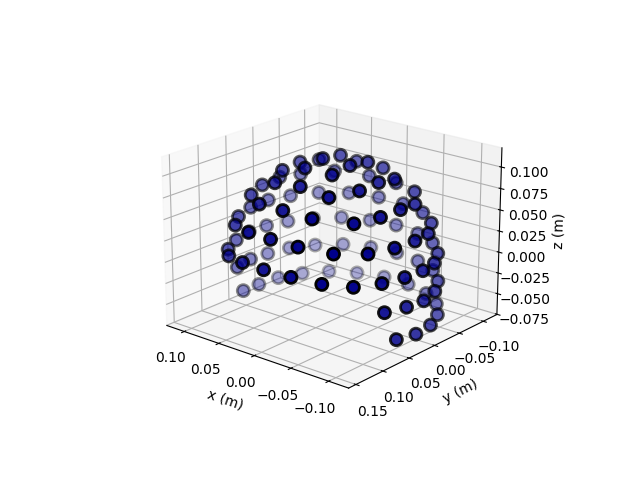
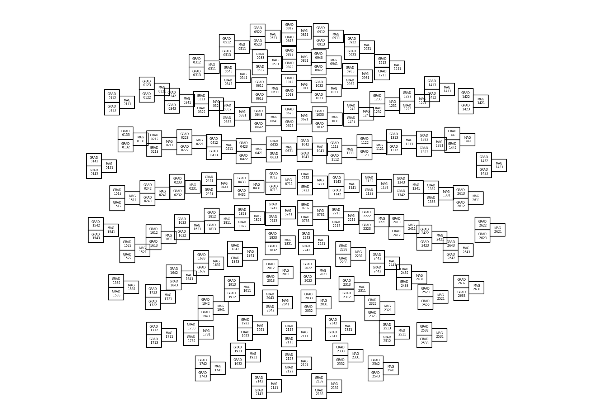
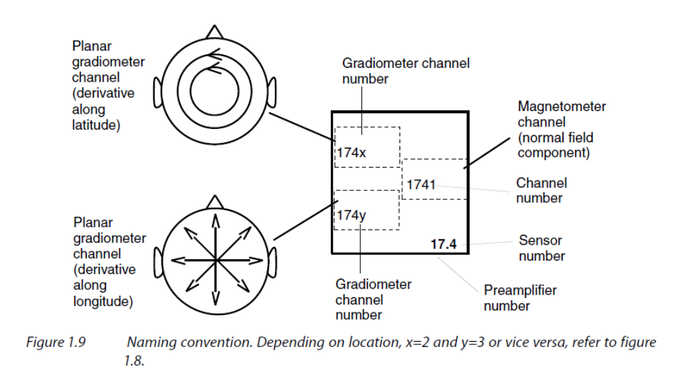
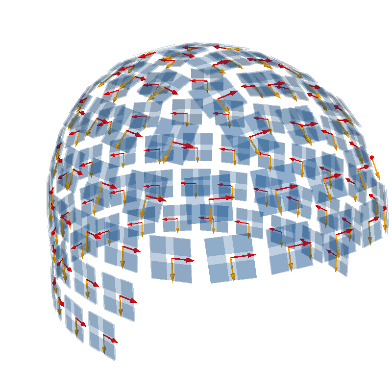

Note
Go to the end to download the full example code.
Sensor positions🔗
Important
This example requires the meg_wiki package to download the sample dataset. This
package can be installed with pip:
$ pip install git+https://github.com/fcbg-hnp-meeg/meg-wiki
The sensor position is defined for each sensors as an array of 12 elements.
This array represents the position and the normal given by a (3, 3) rotation matrix,
in device coordinates.
import numpy as np
from matplotlib import pyplot as plt
from mne import pick_info, set_log_level
from mne._fiff.pick import _picks_to_idx # handy private function for selection
from mne.channels import read_layout
from mne.io import read_info
from mne.transforms import Transform
from mne.viz import plot_alignment, plot_sensors, set_3d_view
from mne.viz.backends.renderer import create_3d_figure
from meg_wiki.datasets import sample
set_log_level("WARNING")
info = read_info(
sample.data_path() / "meas_info" / "measurement-info.fif", verbose=False
)
info
In MNE-Python, the sensor position is stored under the key loc for every channels.
print(info["chs"][0]["loc"])
[-0.1066 0.0464 -0.0604 -0.0127 0.0057 -0.99990302
-0.186801 -0.98240298 -0.0033 -0.98232698 0.18674099 0.013541 ]
Along with other sensor information:
scanno: 1
logno: 111
kind: 1 (FIFFV_MEG_CH)
range: 1.0
cal: 1.329999999022391e-10
coil_type: 3024 (FIFFV_COIL_VV_MAG_T3)
loc:
Position:
[-0.1066 0.0464 -0.0604]
Normal:
[[-0.0127 0.0057 -0.99990302]
[-0.186801 -0.98240298 -0.0033 ]
[-0.98232698 0.18674099 0.013541 ]]
unit: 112 (FIFF_UNIT_T)
unit_mul: 0 (FIFF_UNITM_NONE)
ch_name: MEG0111
coord_frame: 1 (FIFFV_COORD_DEVICE)
The sensors can be visualized on a 3D plot. This measurement information was taken from an empty-room recording. Thus, it does not contain an HPI measurement and it does not contain the transform from the device to the head coordinate frame.
# set an identity transformation from the device to head coordinates
info["dev_head_t"] = Transform("meg", "head")
ax = plt.axes(projection="3d")
plot_sensors(info, kind="3d", axes=ax)
ax.view_init(azim=130, elev=20)
plt.show()

The 3D coordinates can be projected on a 2D plane to represent a topographic view of
the sensor array. In MNE, a Layout object is used to represent
the idealied 2D sensor positions. Built-in layouts are available for the MEGIN system,
under the keys 'Vectorview-all', 'Vectorview-mag', 'Vectorview-grad', and
'Vectorview-grad_norm'.
layout = read_layout("Vectorview-all")
fig, ax = plt.subplots(1, 1, figsize=(16.53, 11.69), layout="constrained")
ax.set(xticks=[], yticks=[], aspect="equal")
outlines = dict(border=([0, 1, 1, 0, 0], [0, 0, 1, 1, 0]))
for p, ch_name in zip(layout.pos, layout.names):
center_pos = np.array((p[0] + p[2] / 2.0, p[1] + p[3] / 2.0))
ch_name = ch_name.split("MEG")[1]
ch_name = f"MAG\n{ch_name}" if ch_name.endswith("1") else f"GRAD\n{ch_name}"
ax.annotate(
ch_name,
xy=center_pos,
horizontalalignment="center",
verticalalignment="center",
size=6,
)
x1, x2, y1, y2 = p[0], p[0] + p[2], p[1], p[1] + p[3]
ax.plot([x1, x1, x2, x2, x1], [y1, y2, y2, y1, y1], color="k")
ax.axis("off")
plt.show()

Tip
The function mne.viz.plot_layout() or the method
mne.channels.Layout.plot() can be used to plot the layout with fewer lines
of code but without customization. For instance:
from mne.channels import read_layout
layout = read_layout("Vectorview-all")
layout.plot()
If you pay attention to the plotted layout, you will notice that triplets of sensors
are represented sometimes with GRADXXX2 on top and GRADXXX3 on the bottom, and
sometimes the other way around. This is because the sensors are not all oriented in
the same direction. The sensor in the top box measures the derivative along the
latitude while the sensor in the bottom box measures the derivative along the
longitude.

Figure taken from MEGIN’s User’s Manual (copyright ©2011-2019 MEGIN Oy).🔗
We can visualize the orientation in 3D, with the sensors oriented along the lines of latitude (horizontal sensitivity along the equator) in red and the sensors oriented along the lines of longitude (vertical sensitivity along the equator) in orange.
picks = _picks_to_idx(info, picks="grad")
info = pick_info(info, picks, copy=False)
mask_top = np.zeros(len(info.ch_names), bool)
for k, (ch2, ch3) in enumerate(zip(info.ch_names[::2], info.ch_names[1::2])):
# ch2 ends with MEGxxx2 and ch3 ends with MEGxxx3
idx2 = np.where(np.array(layout.names) == f"MEG {ch2.split('MEG')[1]}")[0]
idx3 = np.where(np.array(layout.names) == f"MEG {ch3.split('MEG')[1]}")[0]
mask_top[2 * k : 2 * k + 2] = (
[True, False]
if layout.pos[:, 1][idx2[0]] > layout.pos[:, 1][idx3[0]]
else [False, True]
)
mask_bottom = ~mask_top # opposite
# retrieve position and orientation in device coordinate frame
pos = np.array([ch["loc"][:3] for ch in info["chs"]])
ori = np.array([ch["loc"][3:6] for ch in info["chs"]])
# create render
renderer_kwargs = dict(bgcolor="w")
renderer = create_3d_figure(
size=(800, 800),
scene=False,
bgcolor="w",
)
plot_alignment(info, meg="sensors", coord_frame="meg", fig=renderer.scene())
renderer.quiver3d(*pos[mask_top].T, *ori[mask_top].T, "r", scale=0.015, mode="arrow")
renderer.quiver3d(
*pos[mask_bottom].T, *ori[mask_bottom].T, "orange", scale=0.015, mode="arrow"
)
set_3d_view(renderer.figure, azimuth=55, elevation=70, distance=0.55)

Total running time of the script: (0 minutes 4.745 seconds)
Estimated memory usage: 217 MB